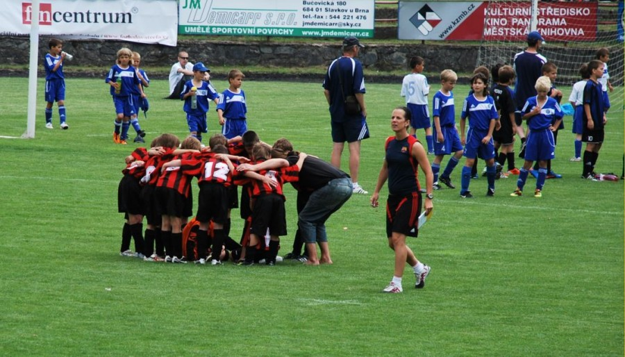

Třetí ročník, rok 2013
V pořadí třetí ročník boskovického fotbalového turnaje se odehrál v
červnu 2013 a zúčastnilo se jej 24 týmů z České republiky, Slovenska
a Rakouska. Význam a smysl turnaje vidíme jinde než v celkovém umístění
týmů, ale pro příznivce čísel nabízíme i žebříček výsledků :-) Podrobnosti
najdete na
webu FC Boskovice.
- FC Zbrojovka Brno
- SK Slavia Praha 2
- SK Rapid Wien 2
- SK Slavia Praha 1
- Bohemians Praha 1905 2
- MFK Ružomberok
- FC Budapešť
- FC Hradec Králové
- ŠK Slovan Bratislava
- MFK Skalica
- MŠK Žilina
- TJ Tesla Stropkov
- SK Rapid Wien 1
- FK Mladá Boleslav
- FC Kuřim
- FC Vysočina Jihlava
- FK Baník Most
- FŠ Třebíč
- FC Sparta Brno
- FK Dukla Praha
- ZVVZ Milevsko
- FK Viktoria Žižkov
- Bohemians Praha 1905 1
- FC Boskovice
Druhý ročník, rok 2012
„O víkendu 16.–17. června jsme se zúčastnili pravděpodobně nejlépe
připraveného turnaje v této sezoně. Kromě Sparty se turnaje zúčastnila
všechna nejlepší mužstva v republice, krom toho komplet slovenská špička
doplněná Rapidem Vídeň a FC Budapešť,“ píše jeden z účastníků turnaje, klub
FC Bohemians 1905. Podrobnosti najdete na
webu FC Boskovice.
- Bohemians Praha 1905 2
- MŠK Tesla Stropkov
- FC Zbrojovka Brno
- FC Boskovice 1
- MFK Ružomberok
- SK Slavia Praha 2
- SK Rapid Wien
- FC Sparta Brno
- Bohemians Praha 1905 1
- FC Hradec Králové
- MFK Skalica
- ŠK Slovan Bratislava
- FK Slavoj Žatec
- FC Budapest
- SK Slavia Praha 1
- MŠK Žilina
- FK Humpolec
- FK Viktoria Žižkov
- FC Kuřim
- FŠ Třebíč
- FC ZVVZ Milevsko
- TJ Svitavy
- 1.SK Prostějov
- SK Sigma Olomouc
- FC Svratka Brno
- SK Kladno
- FK Mladá Boleslav
- FC Boskovice 2
První ročník, rok 2011
325 dětí, 32 přihlášených mužstev, 112 zápasů, 720 branek.
Podrobnosti najdete na
webu FC Boskovice.
